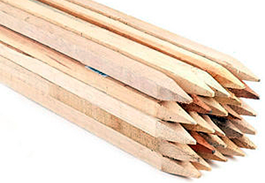

Landscaping Stakes
Grade Stakes | Survey Stakes | Tree Stakes | Landscaping Stakes | Forming Stakes
All grade stakes, survey stakes, tree stakes, landscaping stakes, forming stakes are made from premium grade, hand-sorted spruce lumber.
2" X 2" stakes have a uniform four sided point. Stake sizes are available from 12" to 96".
Tree stakes can be pre-drilled for tie back application.
Custom orders of stakes with painted ends are available.
Bundle Sizes Available
We carry a wide variety of in-stock sizes. If you require custom sizes, or painted ends, please contacts us at
(519) 778-1953 or toll-free (844) 778-1953 to learn more.
- 1" x 2" 50 stakes per bundle
- 2" x 2" 25 stakes per bundle
Wood Landscaping Stake Lengths Available
- 18" – 60" standard sizes, 1" x 2" and 2" x 2"
- Any size between 12" and 96"
- Popular sizes are 24", 48", 60", and 72"